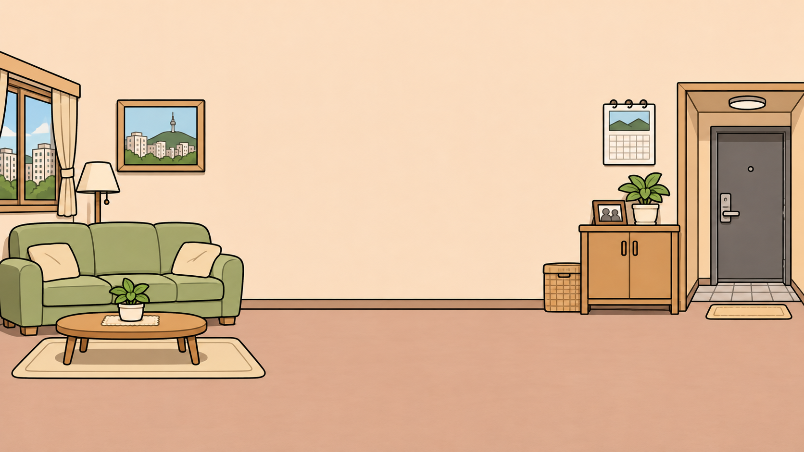
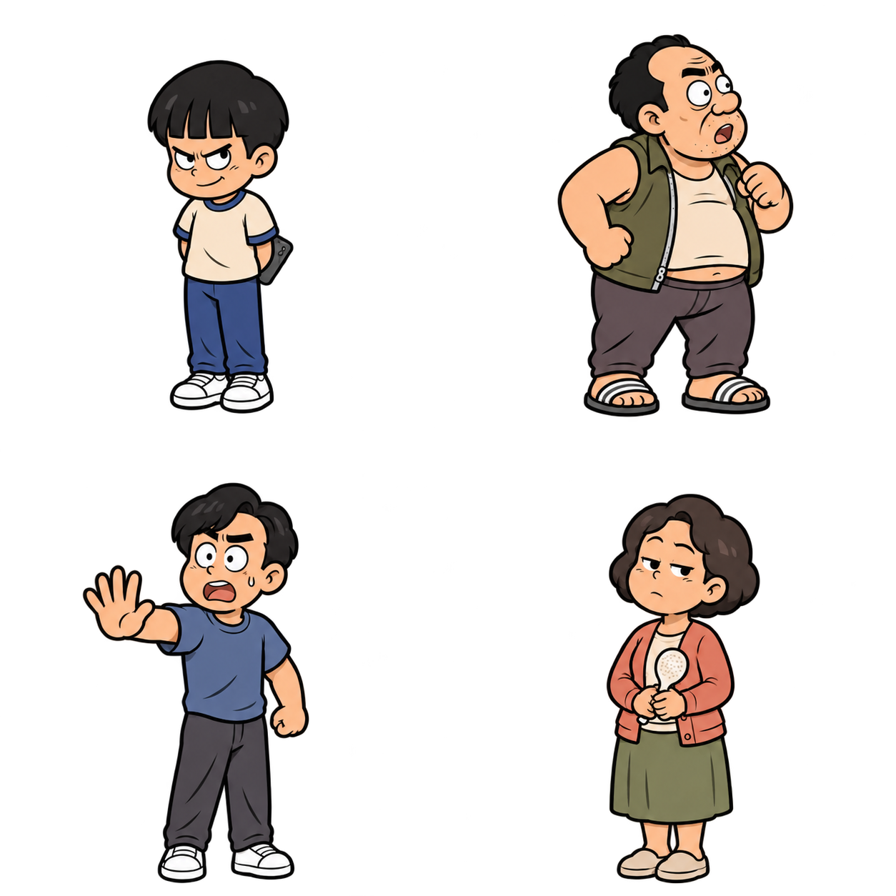
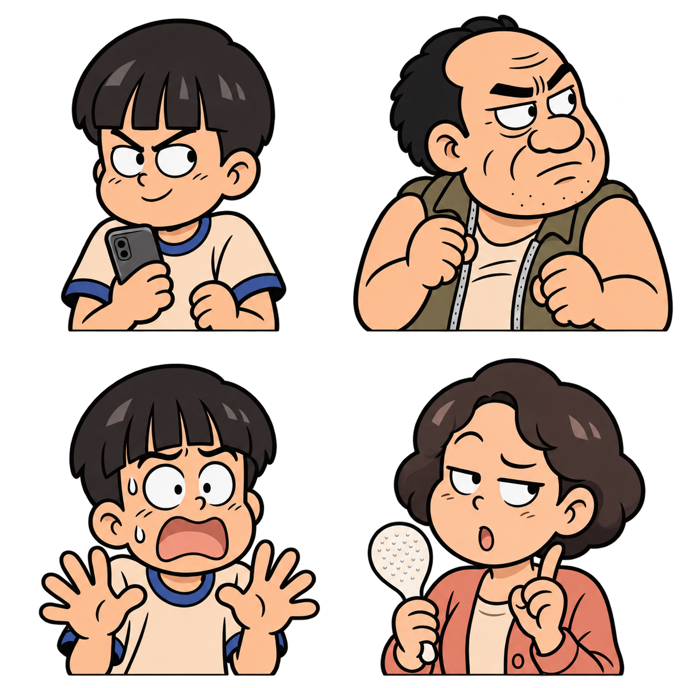
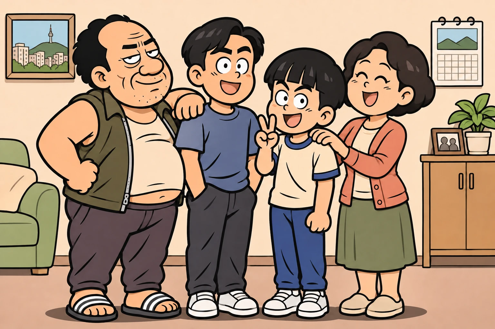

0초
외부 장면은 기존 넓은 거리 배경을 사용합니다. 걷기·입모양·관절 리깅은 포함하지 않았습니다. 결과 정리 포즈는 후속 제작 대상입니다.
제작 에셋
거실 배경1장 · 가족 전신4포즈 · 반응4표정 · 도전 상대1포즈. 인물·표정 시트는 보정판을 사용합니다. 표정 시트 하단 마감은 추가 검수 대상입니다.

빈 거실 배경 · 인물과 별도 레이어
가족4인 컷아웃 · 좌상 만수 / 우상 칠석 / 좌하 철수 / 우하 수진
반응 표정 · 장난 / 각성 / 당황 / 엄마의 한마디
홈페이지 가족 원화 · 디자인 참조용. 새 에셋 아님.스토리·컷별 연출·에셋 사용 명세 · 설정 출처